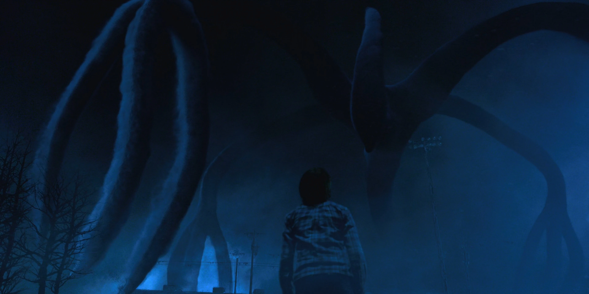
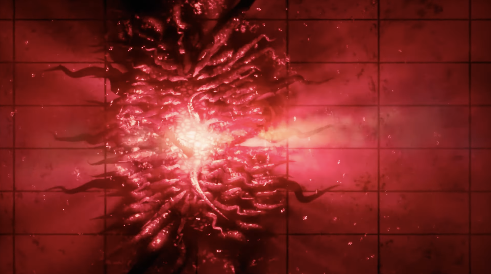

O Outro Lado
Um reflexo distorcido da nossa realidade. Tudo que você teme... habita aqui. Escuridão viva, presenças invisíveis e ecos de um mundo esquecido.
Entidades do Abismo
Sombras
Forças famintas que se movem entre os sussurros da escuridão.

Portais
Fendas pulsantes que respiram entre dimensões distorcidas.
Presenças
Você não está só. Algo te observa... mais perto do que imagina.